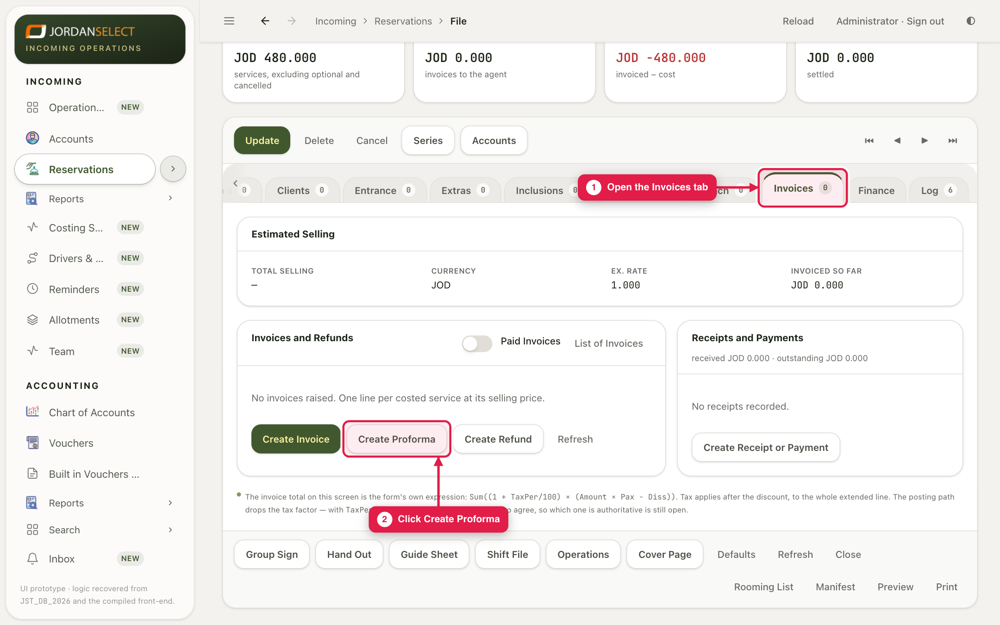
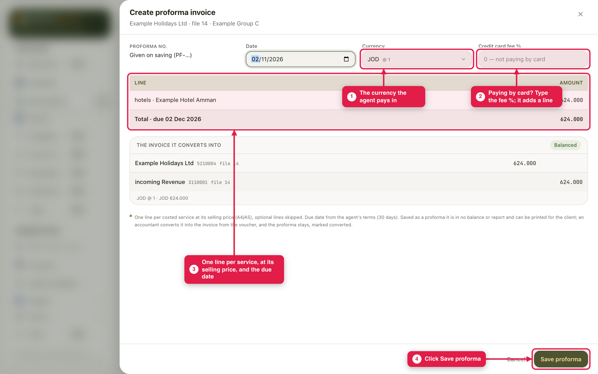
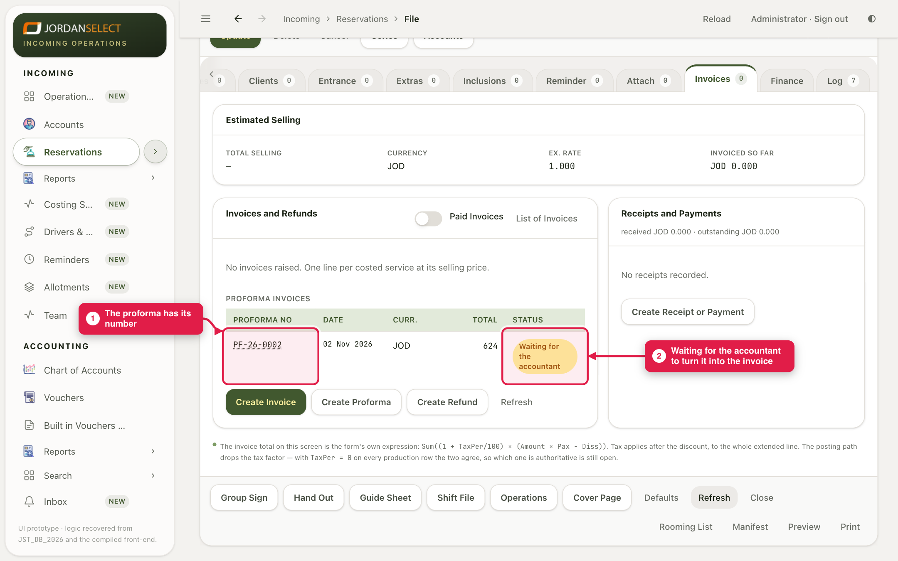
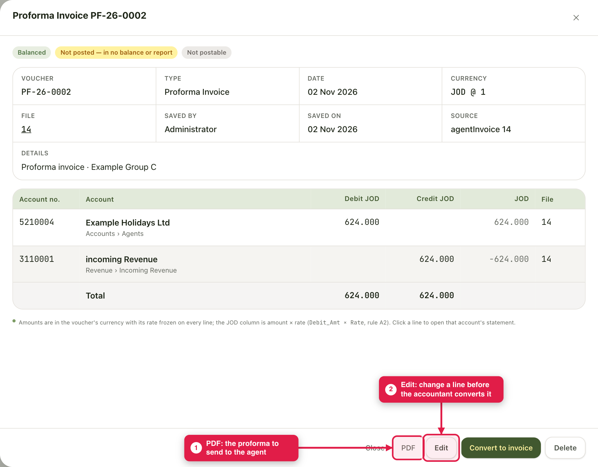

Send the agent the price of the trip. The accountant later turns your proforma into the real invoice.
WhoSales make it · the accountant converts it
WhereThe file → Invoices tab
Takes2 minutes
You needThe file’s services entered, with their selling prices
How it works
Create Proforma reads the file’s services at their selling prices. Saving gives it a number (PF-…) and a PDF you can send to the agent. It does not go into the accounts. The accountant opens it and converts it into the invoice.
Example in this guide: proforma PF-26-0002 for Example Group C.
You only see Create ProformaThe pictures were taken as the administrator, who also sees Create Invoice and Convert to invoice. Those are for the accountant. Sales see Create Proforma only.
1. Create the proforma
1
Open the file, go to the Invoices tab and click Create Proforma.

The Invoices tab lists every proforma and invoice on the file.
2
Check the currency the agent pays in. If they pay by card, type the Credit card fee %; it adds a line for the fee. Check the lines (one per service, at its selling price) and the due date. Click Save proforma.

Create Proforma. The lines come from the file, so fix a wrong price on the file first.
2. Send it
3
The proforma has its number, and shows Waiting for the accountant.

Saved. It stays until the accountant converts it into the invoice.
4
Click the proforma to open it. PDF gives you the proforma to send the agent. Edit lets you change a line, or read the file’s prices again, until it is converted.

An open proforma. Once converted, it is marked so and can no longer be edited.
3. Check your work
The total matches the price you quoted the agent.
The currency is the one the agent pays in.
The PDF went to the agent’s bookings e-mail.
Questions? Ask the accountant. · Last checked: ____ · Screens shown are from a test copy of the CRM with made-up data.